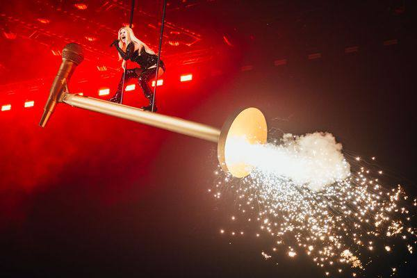

Biography
The Tango Queen
Erika Susanna Vikman was born on 20 February 1993 in Tampere, Finland, and grew up between Lempäälä and Pori. Her mother was a tango singer who competed at Tangomarkkinat — Finland's storied tango festival — and music ran in the family: Erika's younger sister Jennika is also a singer.
Erika's own road started in earnest in 2013 on season seven of Finnish Idols, where a wildcard return carried her to seventh place. She turned to tango next, finishing runner-up at Tangomarkkinat in 2015 before winning outright in 2016 — crowning her the Tango Queen of Finland.


In 2020, "Cicciolina" — named after the Hungarian-Italian performer and politician Ilona Staller — placed second in Finland's Uuden Musiikin Kilpailu but became Erika's first top-five hit. The follow-up, "Syntisten pöytä," reached number three and gave her a first number-one radio hit. That same year she competed as "The Wasp" on Masked Singer Suomi, finishing third, and publicly came out as bisexual.
Her self-titled debut album landed in August 2021 and went straight to number one in Finland — proof the tango hall had built a pop star built to last.
Written and produced by Christel and Jori Roosberg and released through Warner Music Finland and Mökkitie Records, "Ich Komme" won Uuden Musiikin Kilpailu 2025 on a 75% public vote / 25% jury split — and carried Finland into the Eurovision Song Contest in Basel.
Erika qualified third from her semi-final with 115 points, then finished 11th in the Grand Final with 196 — the performance defined by her being hoisted skyward on a giant golden microphone stand, throwing fireworks over the arena. The Eurovision Awards 2025 named her Style Icon for the look.

Erika released the EP "Erikavision" in 2025 and continues to write music that moves between tango-rooted balladry and maximalist electropop. She's known just as much for her fearless personal style — latex, spikes, sky-high boots — as for her vocals, and for a fanbase that shows up in matching "ICH" t-shirts.
 With the team, Basel 2025
With the team, Basel 2025 Ich Komme merch
Ich Komme merch Award show, 2025
Award show, 2025 With the fans
With the fans